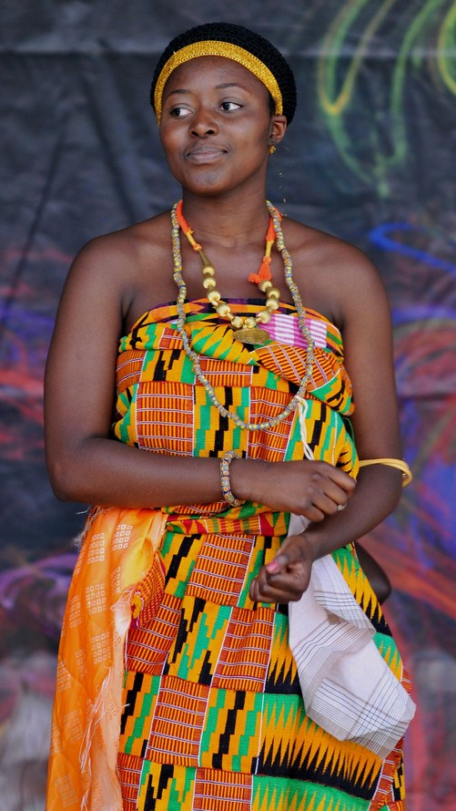

This name generator will give you random Akan names and meanings. The Akans are a meta-ethnicity who primarily live in Ghana and Ivory Coast with a population of around 20 million people. As a meta-ethnicity they share a lot of common traits, but there are various sub -groups related mostly to language and some cultural differences. If you are curious about the Akan name tied to your birthdate. Simply enter your birth month, year and date in the form, and let the generator pick ur Akan name.

Your Akan name is